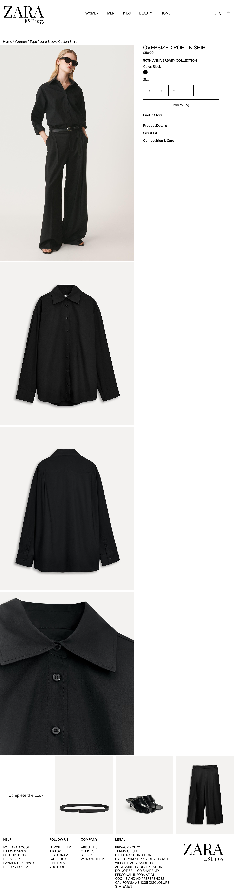
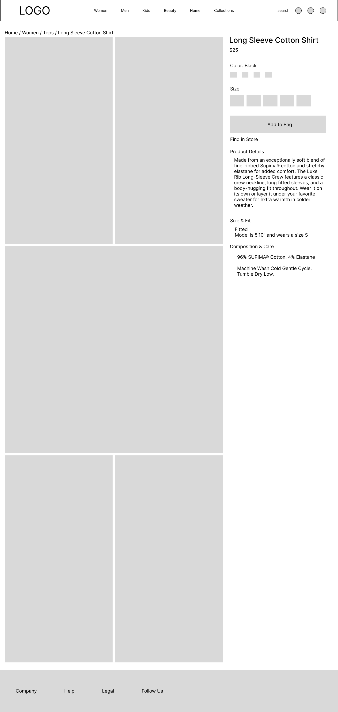
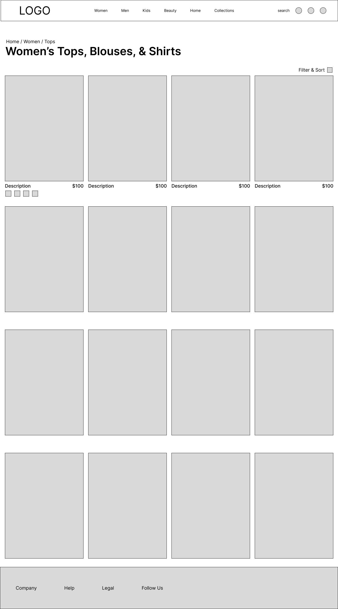
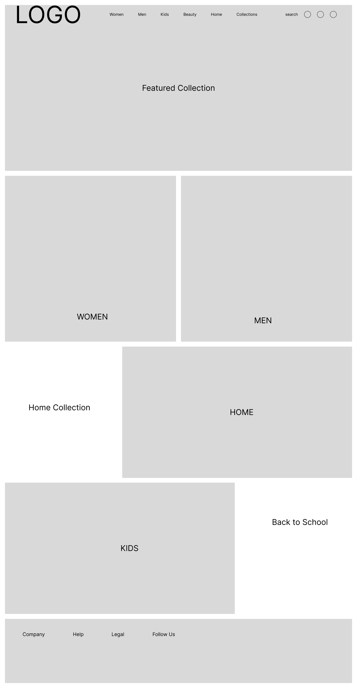
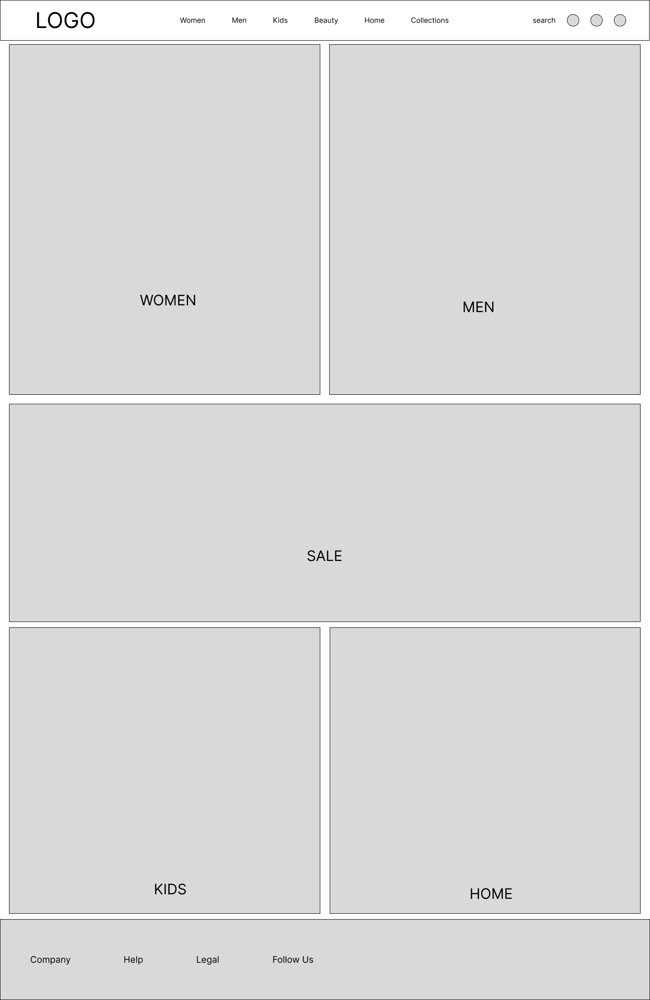

Phase 1: Research and Analysis.
To kick off the project, I conducted a comprehensive usability evaluation of Zara's retail website.
Detailed look of the heuristic analysis, competitve analysis, and accessibility review can be found here: Heuristic Evaluation, Competitive Analysis, and Accessibility Review
Click on each to expand for more:
Heuristic Evaluation
For the Heuristic Evaluation, I selected few simple tasks such as "Without using the search bar, find a women's black long sleeve shirt" and "Locate the men's 'New Arrivals' section" and even "Go to the home page," and stemmed the rest of the review from there. This method provided a structured way to identify and prioritize usability issues across the Zara website Overall, I noted 23 different tasks or items that warranted a usability rating and how severe they were based on Nielsen Norman's Severity Ratings for Usability Problems:
- 5 were usability catastrophes
- 9 were major usability problems
- 6 were minor usability problems
- 1 was cosmetic only
- 2 were not an issue
Competitive Analysis
For the competitive analysis, I chose to compare Zara's website with those of H&M, COS, and Everlane and selected those three for a few reasons: H&M is another fast fashion “mall” retailer; COS is another international brand with modern garments and an aspirational website to model; and Everlane is stylistically different and focused on sustainability. I thought a contrasting brand would offer interesting comparison points.
The competitive analysis brought clarity into just how unconventional Zara's website is. Zara performed miserably in comparison to others in areas like page layout, readability, site organization, and navigation. Conversely, it showed how thoughtfully designed COS's website was, which was an unexpected realization.
Accessibility Review
Since Zara's website is not compatible with WAVE or other online accessibility tools, I conducted a manual accessibility review instead. I created a list of WCAG guidelines directly related to the project and focused on a few areas such as the home page, a browsing page, and a product page. I noted several major issues with font legibility, navigability, and distracting website media.
Think Aloud Sessions
The final part of the research phase was focused on real users. My first goal here was to confirm whether the findings in the heuristic evaluation and competitive analysis were accurate and as significant as I thought. My second goal was to narrow down the design focus of the redesign.
I was able to recruit five participants and with each, conducted 30 minute “think aloud” usability sessions. After providing instructions and asking for consent to record the session, participants were asked to complete six to seven simple tasks based on the “catastrophic” and “major” usability issues discovered previously in the heuristic evaluation.
Some of the prompts included, “Take a moment to explore the homepage. What stands out to you? What do you expect to be able to do from here?” and “Choose any clothing item and add it to your shopping bag, as if you were planning to buy it.”
The “think aloud” sessions were especially insightful with participants confirming some of the same usability concerns that I noticed. After my session with participant 1, I added a task about the product page since they noted some interesting points about that design area which I felt was useful. Participant 2 had a unique accessibility perspective that informed some design areas and confirmed some of the accessibility issues I noted in the previous week. By participant 3, themes were becoming apparent, including major confusion about the homepage and how items are categorized, the “add-to-cart” button, and overall site structure. Due to technical and accessibility limitations during one session, screen-sharing data was not captured, which made it difficult to analyze the interaction in the same way as the other sessions. As a result, the findings presented here are based on four fully documented sessions.
Overall, the usability testing sessions revealed that users shared similar frustrations about the website, especially around the home page and navigation, and also identified areas that I did not anticipate, such as unclear clothing size information and minimal button hover states.
Phase 2: Synthesis.
Affinity Mapping
After gathering and analyzing the research data, I synthesized the findings to identify key themes and prioritize design areas for the redesign. I used affinity mapping to organize the insights into clusters, which helped me see patterns and relationships between the issues. From there, I focused on redesigning the homepage, navigation, and product pages, as those were the areas with the most significant usability problems and the most user frustration.
Detailed review of the Think Aloud sessions and Affinity Mapping synthesis can be found here: Think Aloud Sessions and Affinity Mapping Synthesis


Overall Redesign Approach.
After grouping comments from the Think Aloud sessions together, themes became apparent. The most urgent issues users faced were related to homepage confusion, unclear navigation, and unintuitive menu organization, all of which created significant friction in early shopping tasks.
- Homepage. Redesigning the homepage to clearly communicate the brand's purpose, reduce visual noise, and offer intuitive entry points into the shopping experience (e.g., labeled imagery, product categories, and calls-to-action).
- Global Navigation. Restructuring the global navigation, removing the hamburger menu, and reorganizing product categories to align with user expectations and support findability.
- Hero Product Page. The hero product page will be redesigned to provide a more engaging and informative shopping experience, with more prominent hover states and button feedback, clearer sizing information, and clearer visual hierarchy.
This scoped approach prioritizes clarity, usability, and confidence-building interactions, aligning the site's minimalist aesthetic with functional shopping behaviors.
Phase 3: Design.
Here, I began rethinking the page layouts and global navigation. As mentioned, users expressed confusion and frustration with the home page, especially regarding its purpose and prioritization of design over functionality. Additionally, a very strong theme of navigation issues emerged, indicating a need for it to be completely restructured and redesigned.
Design Decisions and Key Pages.
Expand the design decisions to include more specific details about the changes made.
Header & Footer
For the header, I omitted the hamburger menu completely because it hid important categories, navigation cues, and call to actions, and because it is generally designed for smaller screens. Instead, I created a header that prominently displayed Zara’s logo, main shopping categories (Women, Men, Kids, Beauty, and Home), and icons for search, favorites, and the shopping bag. Since Zara’s website heavily featured the 50th anniversary collection, I created a custom logo that included the brand's established date as a way to highlight that. The footer remained largely the same, but with improved category headers, cleaned up lists, and a streamlined appearance. The header and footer appear consistently on every page.
Navigation Menu
The navigation menu caused the most trouble for users due to unclear and ambiguous product categorization. With the hamburger menu removed, the header became the main point of interaction. Hovering over each top-level category reveals a dropdown menu containing relevant items. For example, hovering over “women” displays an overlay menu with clothing, accessories, beauty, and edits (collections) with subcategories underneath. To help shoppers with wayfinding, I also restructured the categories from Zara's website by rearranging the list, combining similar items, and moving irrelevant items. This ideally will help shoppers efficiently find what they are looking for.
Home Page
Alongside the global navigation menu, the homepage underwent drastic changes. I tried several layouts to capture the editorial feeling of Zara’s aesthetic while also aiming to reduce wasted whitespace and offer intuitive entry points into the shopping experience (e.g., labeled imagery, product categories, and calls-to-action). Using Figma’s layout guides, I landed on a two column by four row layout with some frames spanning the entire width of the page, and others split in half. Opposite to Zara's website, I significantly minimized the spacing between sections, and omitted left and right margins altogether. This style was similar to aspirational and modern websites like COS, Everlane, and even Apple.
In terms of information hierarchy, the first section contained the featured collection, to immediately draw shoppers' attention. The second row contained categories for women’s and men’s clothing. The third row contained Zara Home, and the last contained Zara Beauty. Each section included clear, interactive labels and images that communicate the purpose of the section. Most interestingly, the size and orientation of the images were the biggest influence of the final layout, which is something I will keep in mind for the future.

Tops/Shirts Page
Next, I determined the layout of the tops, blouses, and shirts page. In Think Aloud task 3, Users found it very difficult to determine which of the many shirt categories to pick when looking for a black long sleeve shirt. To resolve this, I consolidated all tops into one page where users could filter by shirt type as necessary.
For layout, I initially designed the page to display four products across, but after adding in images, three columns looked less cluttered and more appealing. I also included alternate garment colors, which Zara’s website did not clearly show. I inserted featured items between regular products to mimic Zara's editorial-style aesthetic. Most importantly, I included a clear header and breadcrumb menu, which are currently missing in Zara's website.

Product Page
The goal of a product page is to give shoppers the details they need about a garment, reduce uncertainty about the product, and to encourage them to add an item to their bag. While Zara’s current website accomplished this to a point, the odd layout, overlay side menus, and dual-action size/add-to-cart button left users confused and underwhelmed. To address this, I designed a two column layout to utilize the full page and maximize the product images: the left side contained the images, and the right size contained the product information. Inspired by COS’s design, I anchored the product information so that product details, size buttons, and add-to-bag button remained visible as shoppers scroll down the page. I also included a “complete the look” section at the bottom of the page to further encourage purchases.

Browsing Page
After creating the home, product, and shirt pages, I realized I needed a transition page to bridge the home page with the tops/shirts page. To do this, I created a browsing page with top level categories that included a featured collection, tops, bottoms, dresses, and beauty. I mimicked the home page with large images that mirror the categories and clear labelling. Again, I included a breadcrumb menu, and a clear header so that shoppers know where they are.

Wireframes.
I created wireframes for each page to establish the structure and layout of the content. The wireframes were designed to be simple and focused on functionality, with a clear hierarchy of information and intuitive navigation. I used Figma to create the wireframes, which allowed me to easily iterate and make changes based on feedback.




Functional Prototype.
Try to find a women's black long sleeve shirt - it should be pretty straightforward now.
Open Interactive Prototype
Final Thoughts.
Overall, the redesign delivers a clearer, more navigable, and more accessible shopping experience. The homepage provides intuitive entry points into the shopping experience, while the navigation menu offers a more organized and user-friendly way to explore Zara's offerings. The product pages are designed to provide shoppers with the information they need to make informed purchasing decisions, while also encouraging them to add items to their bag. By addressing the key usability issues identified in the research phase, this redesign aims to create a more enjoyable and efficient online shopping experience for Zara's customers.